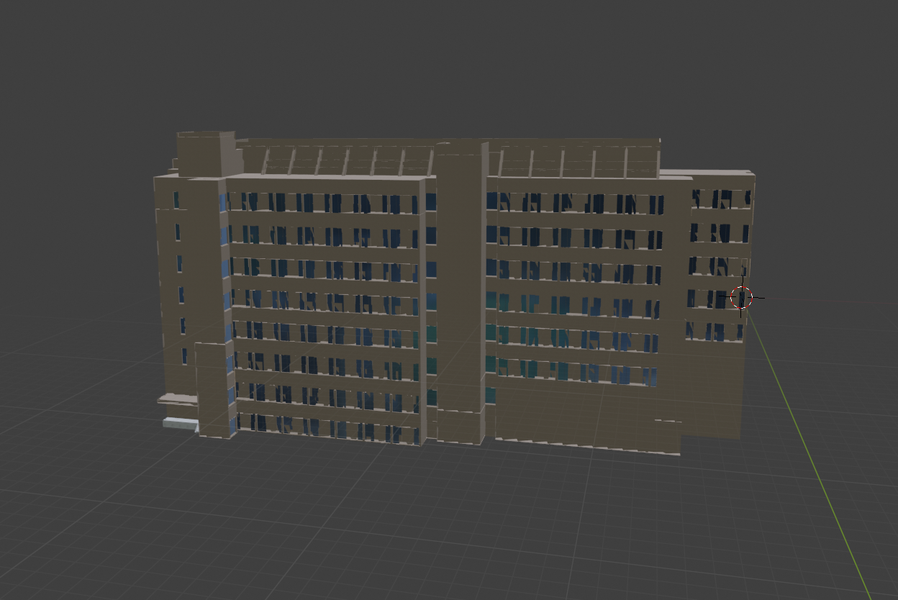
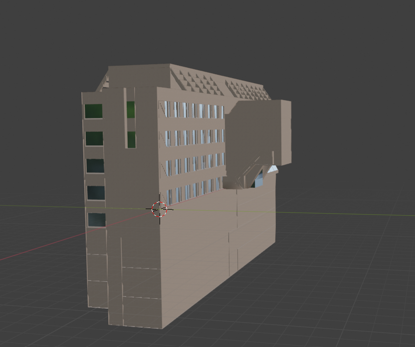
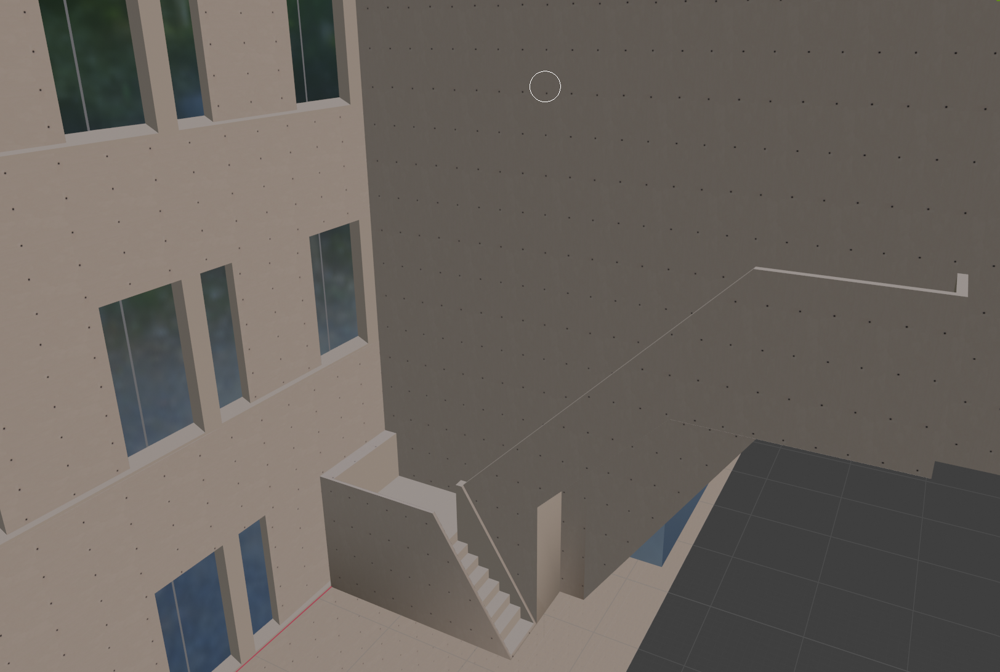
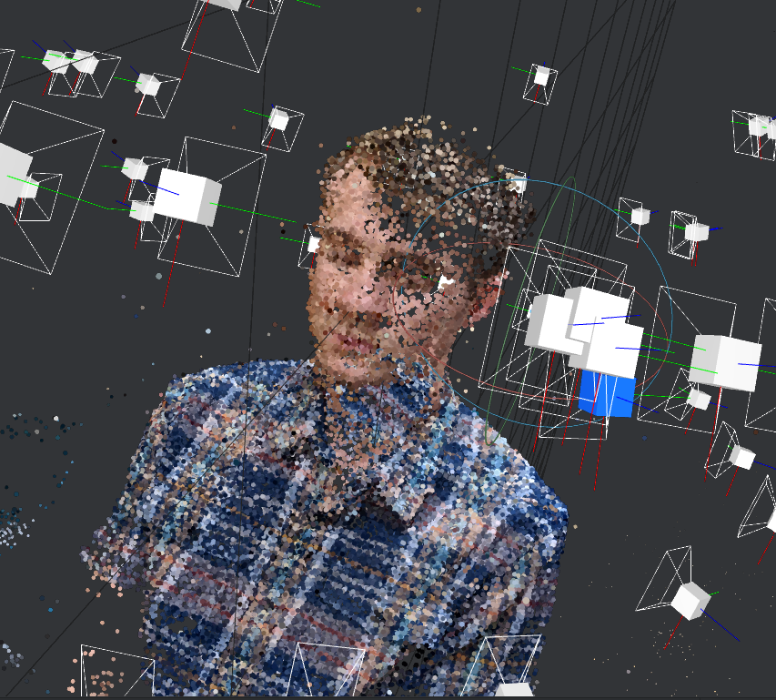

Reality Computing
This class was all about turning real-world objects into virtual ones, using a variety of different technologies. For the first half of the class, we focused on turning our campus buildings into virtual assets. I was assigned to Wean Hall, and chose to use the building plans to model it in SketchUp, and texture it using Blender, Maya, and GIMP.
 For the second half of the class, I worked on a project called "Capture the Human". Our goal was to use photogrammetry software to create a full model of a human being. We ended up testing many different methods, and through a process of elimation we ended up with a successful method for creating high-quality models of humans. To read more about our process, see our blog on the course website!
